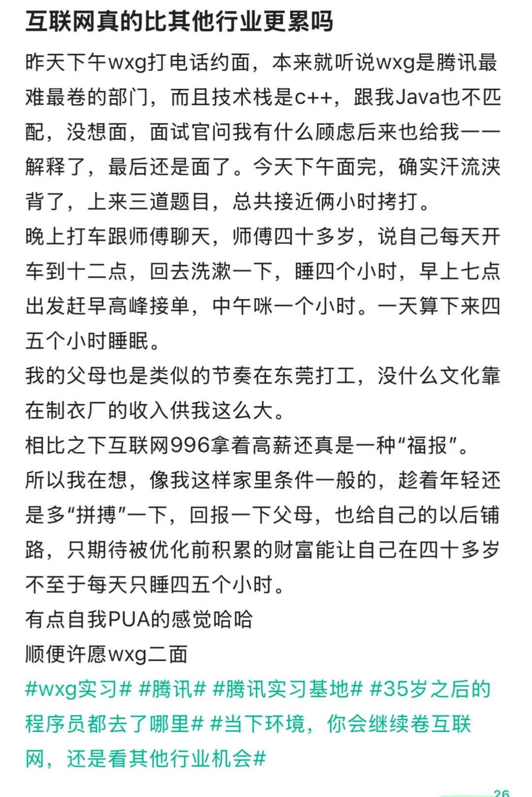
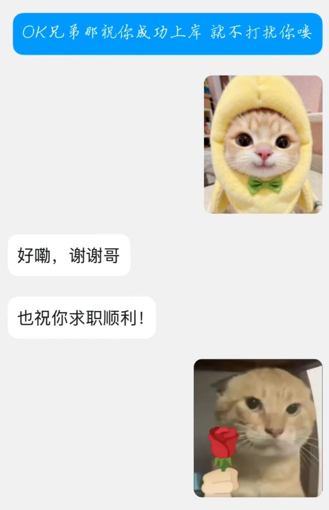
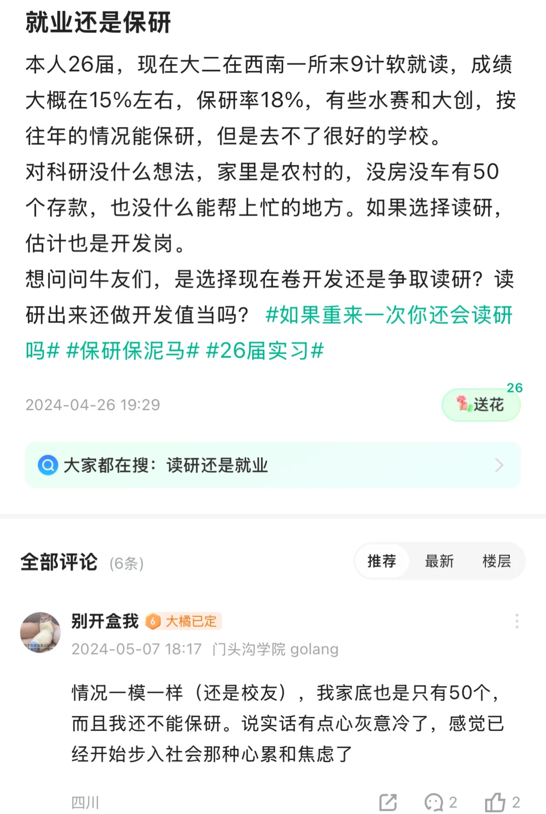

這週的心情有點跌宕起伏
起因是暑期打完4C之後一直擺爛，擺到現在總覺得錯過了八月底九月初的黃金投遞時間，所以一開學一直很焦慮。之後學院發了上一屆的保研細則，跟朋友算了一下應該正好可以保研，但估計不能保很好的外。其實自己沒想過要保研什麼的，但也算是有條後路。再加上群裡好多前輩也是十月十一月找到的一段實習，所以心裡有了慰藉踏實了挺多。過兩天4C的隊友突然給我發消息說週五字節約面了，一下子又給我橫向整焦慮了，又開始重新思考到底為了啥那麼焦慮那麼卷
今晚在圖書館模擬面試的時候，前幾天加的前輩暑期鵝轉正了，白天還說拒了學院的推免晚上就轉了，真的很羨慕很羨慕很羨慕。回了宿舍跟一個同輩交流了一下，他說他決定考研不就業了，最後兩人互勉自己還挺感慨的。
可能是晚上喝了杯茶的緣故失眠到兩點索性起來背八股，有意思的是在牛客刷到了上述轉正前輩的帳號，視奸了一下愈發感慨，對這段話真的深有感觸：
「像我这样家里条件一般的，趁着年轻还是多“拼搏”一下，回报一下父母，也给自己的以后铺路，只期待被优化前积累的财富能让自己在四十多岁不至于每天只睡四五个小时」
感覺自己的精神狀態跟去年的他同步了一樣，要是明年的暑期鵝轉正也能同步就好了😭